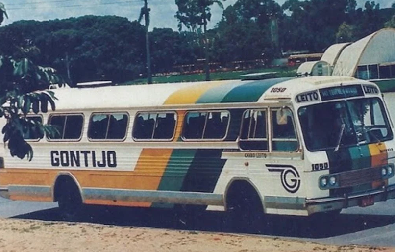
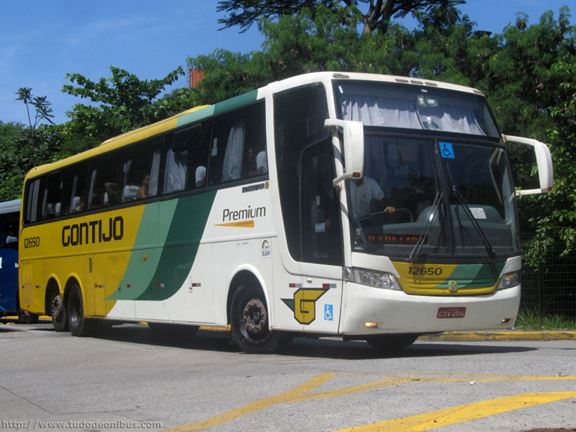
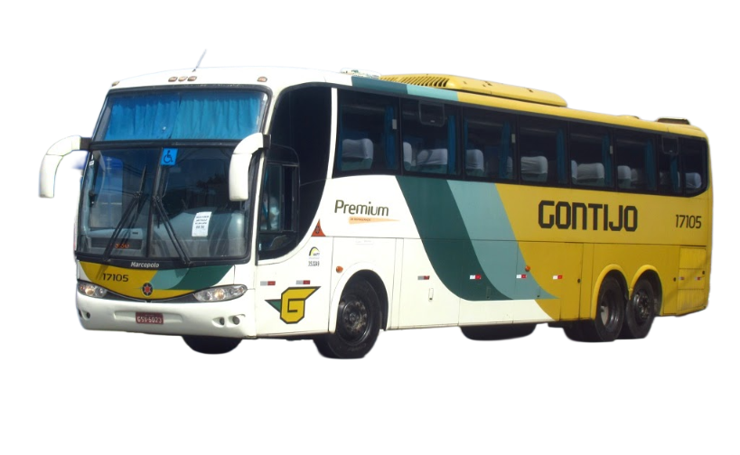
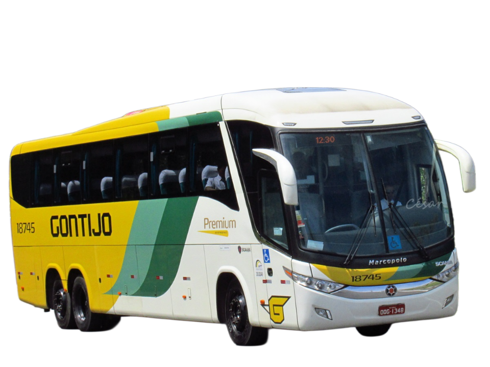
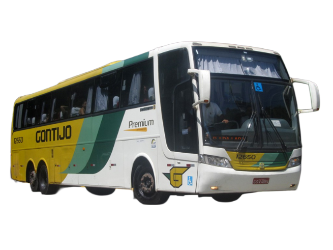

Há mais de 80 anos. cruzamos o Brasil para unir o que é importante para você. Há mais de 80 anos, nossa história se mistura com a sua nas estradas. Evoluímos a cada quilômetro, mas mantemos intacto o compromisso que assumimos no início: levar você com segurança, tradição e o respeito que só quem conhece cada curva do país pode oferecer.


Assim como um marco na renovação do transporte rodoviário brasileiro, o Marcopolo Paradiso 1200 G6 destacou-se pelo equilíbrio entre robustez estrutural, conforto interno e ampla presença nas frotas de longa distância durante os anos 2000.

Representando uma evolução estética e tecnológica, o Marcopolo Paradiso 1200 G7 trouxe design mais aerodinâmico, melhorias em ergonomia e avanços em segurança, consolidando-se como referência nas linhas rodoviárias premium.

Símbolo de uma geração anterior de ônibus rodoviários, o Busscar Jum Buss 360 combinava imponência visual, amplo espaço interno e tradição operacional, sendo amplamente utilizado em viagens interestaduais de longa distância.